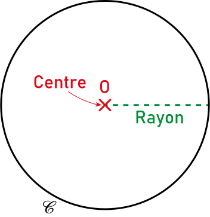
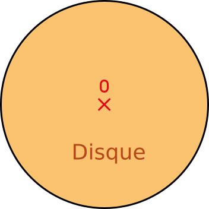
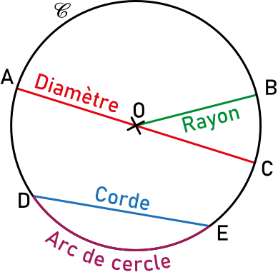
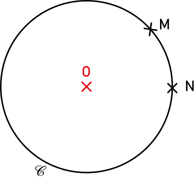

|
Chapitre 6
|
|
Partie 1
|
- Cercles et disques
|
Définition :
Cercle :
Un cercle de centre O est formé de tous les points à une même distance du point O.
Cette distance est appelée le rayon du cercle.
Exemple :

Disque :
Un disque de centre O est formé de tous les points à une distance inférieur ou égale à son rayon.
Un disque est donc constitué d'un cercle et de son intérieur.
Exemple :

Vocabulaire :
- Une corde est un segment dont les deux extrémités appartiennent au cercle.
- Un diamètre est une corde particulière qui passe par le centre du cercle.
- LE diamètre d'un cercle est la longueur commune à tous les diamètres.
- Un arc de cercle est une partie du cercle délimité par deux points.
Exemple :

Remarque :
- Il existe une infinité de diamètre.
Propriétés :
Tous les points d'un cercle de centre O sont à la même distance du point O.

On sait que les points M et N sont sur le cercle.
D'après la propriété précédente
Deux points situés à la même distance d'un point O appartient au un même cercle de centre O.
D'après la propriété précédente
M et N appartiennent au même cercle de centre O.